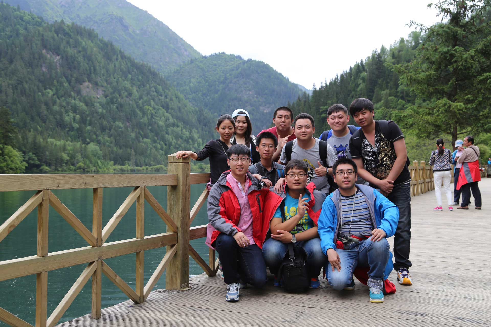
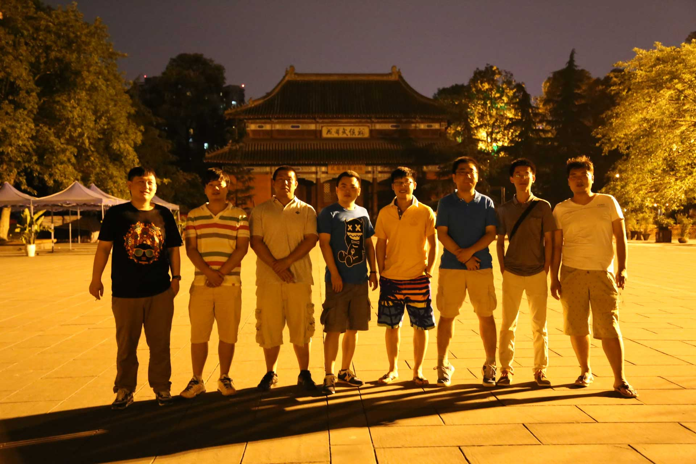

从十月份开始折腾这个小博客，三个月的时间里只更新过一篇文章，只能以“因下半年的工作比较忙没有时间去记录一些东西”这样的借口来敷衍（翻译：懒），借口归借口，依惯例总结一下，聊聊2015。
刚刚完成了一件大事，感谢父母。未来的日子也不再轻松。
工作上，经历了起伏，有忍耐、有爆发、有获得、有失去，每次经历都受益匪浅。一度怀疑自己的坚持是否正确，也迷茫过困扰过，不过现在看来也都不是问题，接受自己的选择就是对自己最好的尊重。
去了健身房。每天5:30下班去健身房，有计划的锻炼，到8点回家吃饭，空闲时间也会去游个泳，上一次下水还是在两年前，还好游泳这项技能会了就不会忘。经过锻炼能明显感觉到身体的变化，因为工作原因没办法坚持下去，很怀念那段时光。
四川和蓟县。生平第一次坐飞机，感觉很奇妙，体会了什么叫推背感，见识了高原反应，走了很长很长的山路，见了从未见的景色。作为北方人真心吃不惯四川那油辣风格的餐饮文化，好在回来的前一天找了一家东北菜馆胡吃海塞，要不胃口真的受不了。蓟县也是第一次，自驾游。农家院，郭家沟，梨木台。在登梨木台那天遇到了大暴雨，雨伞起不到任何做用，全身湿透，雨水沿着土路汇聚成河，荒野求生真人秀，同行的小朋友已经被吓哭，好在下山的时候雨停了，换了身衣服开着暖气把车开回家。这样的经历也是第一次，但这辈子不想体验第二次。
这一年在技术上没有多大的提升，可能是到了瓶颈期，但是我觉得离自己的瓶颈期还有一段距离。造成这样的结果是因为一直与工作内容抗争着。在这里先说明一下不是不喜欢现在的工作，而是在兴趣点上发生了冲突：UX、交互、视觉、好玩的特效以及让人期待的设计 VS 毫无兴趣的数据存储交换。当初选择做前端的初衷是就是以做出交互和体验完美的界面和酷炫的效果为目标，数据存储什么的根本毫无兴趣。所以在设计陆续离开后也挣扎了一段时间，思考了很多很多。兴趣是兴趣，工作是工作，如果能把工作当成兴趣是最棒的，但是又有多少人实现这样的理想呢？对于前端这个职业，流畅的UI和后端交换其实是密不可分的，理解和深入这些知识会帮助你更好的规划和设计。该来的还是会来的。个人的瓶颈就是在这里，自己也会努力突破这一屏障，向着真正意义上的全栈迈进。
写来写去都是一些一些琐碎的东西，一年的关键词应该可以用“思考与反思”来概括，收获最多的是对自己的理解和认识，骨子里那种匠人的情怀，想把一切都做完美是不可能的，更多的是接受和妥协，这才是这个世界的本来面貌。
在这里或许没有资格谈“情怀”，但是真的很怀念那些与设计扣细节，调界面的日子。
不做设计永远不知道1像素有多宽、不做动画永远不知道1秒有多长，前端这个职业也勉强算是手艺人吧。
现在已是2016年，渐渐的开始嫌弃自己这将近30岁的年龄，一事无成，毕业后给自己定下的5年目标能不能实现也在今年会见分晓，思考自己的优势和劣势，其实需要锻炼的还很多。多看几本书，买的kwp3要好好利用起来，总觉得在地铁举着书很不好意思，所以买了kindle，感觉很不错。还有就是不要熬夜！不要熬夜！不要熬夜！重要的事情说三遍。
有时候总想刷一下存在感，但是愤世嫉俗和歇斯底里能有什么用？最终还是把自己搞的疲惫不堪。
理想回归现实。
希望有时间再多出去看看，遇见这个真实的“它”。
M是座山
有高峰有低谷
人活着就得被打击
被认同
被鄙视
被崇拜
有高有低
旅行是最能让人体会的
如果问我2015年最有意义的事情时什么？
2015年里最有意义的事情就是遇见你们这群人了吧。

